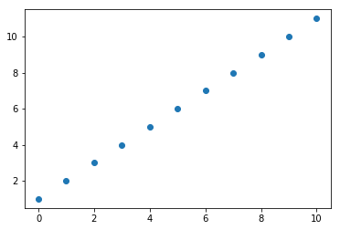
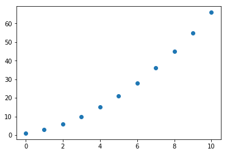
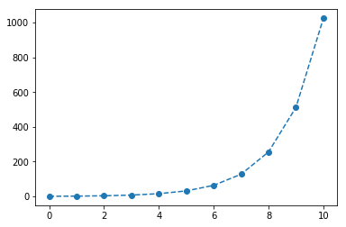
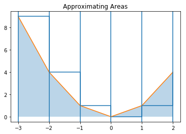

Introducing Python: Lab I¶
GOALS
- Use variables and lists
- Use for loops to make lists
- Plot the results of sequence generation
- Determine summations using
sympyand symbolic computation
In [1]:
%%HTML
<iframe width="560" height="315" src="https://www.youtube.com/embed/0ynBtb9NZg8" frameborder="0" allow="autoplay; encrypted-media" allowfullscreen></iframe>
In [1]:
%matplotlib inline
import matplotlib.pyplot as plt
import numpy as np
import sympy as sy
In [2]:
a = [1, 2, 3, 4, 5]
In [3]:
a
Out[3]:
[1, 2, 3, 4, 5]
In [4]:
a[3]
Out[4]:
4
In [5]:
a[1:4]
Out[5]:
[2, 3, 4]
In [6]:
for i in range(10):
print(i)
0
1
2
3
4
5
6
7
8
9
In [7]:
a = [1]
for i in range(10):
next = a[i]+1
a.append(next)
In [8]:
a
Out[8]:
[1, 2, 3, 4, 5, 6, 7, 8, 9, 10, 11]
In [9]:
a_partials = np.cumsum(a)
In [10]:
a_partials
Out[10]:
array([ 1, 3, 6, 10, 15, 21, 28, 36, 45, 55, 66])
In [11]:
plt.plot(a, 'o')
Out[11]:
[<matplotlib.lines.Line2D at 0x11187d860>]

In [12]:
plt.plot?
In [13]:
plt.plot(a_partials, 'o')
Out[13]:
[<matplotlib.lines.Line2D at 0x11196cf28>]

In [14]:
a = [1]
for i in range(10):
next = a[i]*2
a.append(next)
plt.plot(a, '--o')
Out[14]:
[<matplotlib.lines.Line2D at 0x1119f6a58>]

Symbolic Summations¶
We can use sympy to evaluate formulas for our summations. To do so
we first have to declare our symbols. Next, we use the summation
method of Sympy to evaluate the summations.
In [15]:
x, n = sy.symbols('x n')
In [16]:
sy.summation(x, (x, 1, n))
Out[16]:
n**2/2 + n/2
In [17]:
sy.pprint(sy.summation(x, (x, 1, n)))
2
n n
── + ─
2 2
In [18]:
sy.pprint(sy.summation(x**3, (x, 1, n)))
4 3 2
n n n
── + ── + ──
4 2 4
Approximating Areas¶
To see how to use these ideas to solve a calculus problem, let us consider approximating the area under the curve
\[g(x) = x^2 \quad \text{from} \quad x=-3 ~ \text{to}~ x = 3\]
using 6 rectangles. Recall our formula we developed in class
\[\text{AREA} \approx \frac{b-a}{n} \sum_{i=0}^n f(a + i\frac{b-a}{n})\]
In [19]:
width = (3-(-3))/6
In [20]:
x = [-3 + i*width for i in range(6)]
In [21]:
x
Out[21]:
[-3.0, -2.0, -1.0, 0.0, 1.0, 2.0]
In [22]:
x = [-3]
for i in range(5):
next = x[i] + width
x.append(next)
In [23]:
x
Out[23]:
[-3, -2.0, -1.0, 0.0, 1.0, 2.0]
In [24]:
heights = [i**2 for i in x]
In [25]:
heights
Out[25]:
[9, 4.0, 1.0, 0.0, 1.0, 4.0]
In [26]:
areas = [i*width for i in heights]
In [27]:
areas
Out[27]:
[9.0, 4.0, 1.0, 0.0, 1.0, 4.0]
In [28]:
sum(areas)
Out[28]:
19.0
In [29]:
%matplotlib inline
import matplotlib.pyplot as plt
import numpy as np
In [30]:
plt.step(x, heights, where = 'post')
plt.plot(x, heights)
plt.fill_between(x, heights, alpha = 0.3)
for i in x:
plt.axvline(i)
plt.title("Approximating Areas")
Out[30]:
Text(0.5,1,'Approximating Areas')
